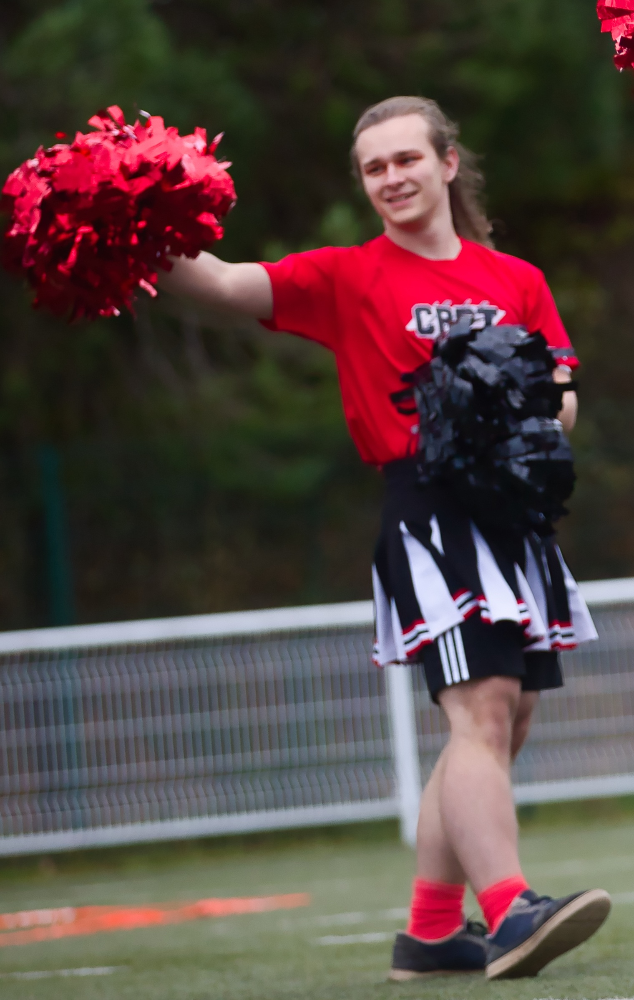
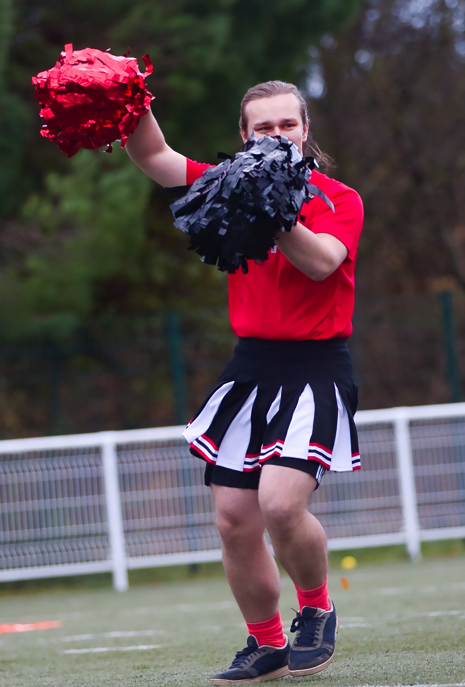
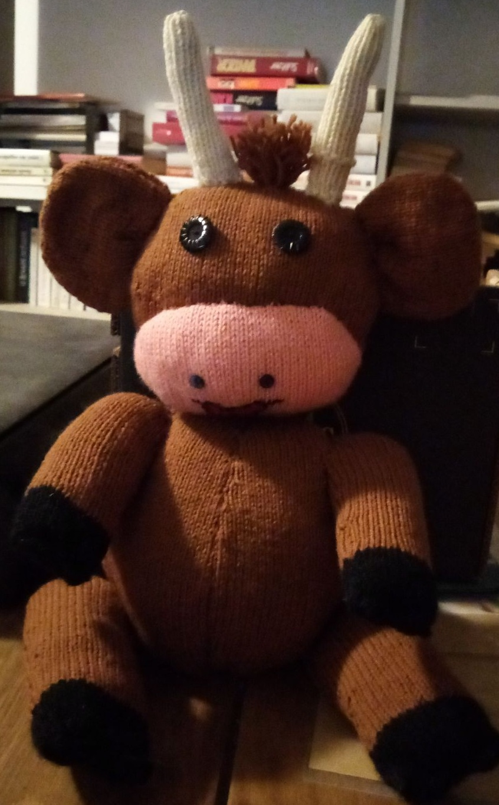
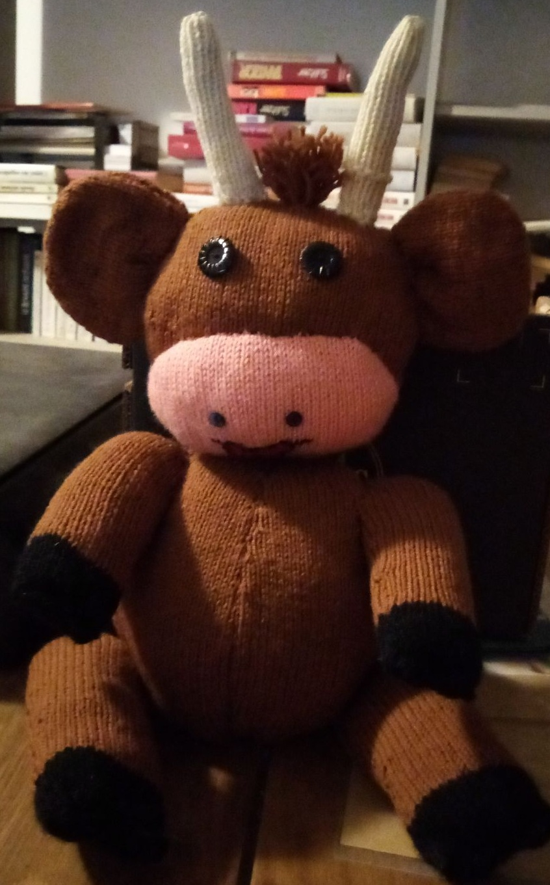

Reading
When I have free time, what I usually do is read, whether
it's an online novel or a paperback book. For me, it's a way to escape
reality and take a moment for myself.

Cinema
I often go to the cinema with my father and brother. It's a way for
me to take a break from reality and discover new horizons.



Pompoms
I have loved Pompom since I started making them in my first year
of Prepa T², and I have continued to make them ever since.
I have already performed several times at matches for TMB and for
the national lacrosse championship.
 


Crochet and Knitting
One of my passions in my spare time is crocheting.
As you can see, I have already made lots of soft and cute cuddly toys.